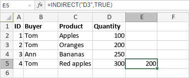

INDIRECT Funkcija
Funkcija INDIRECT je jedna od funkcija za pretragu i reference. Koristi se za vraćanje reference na ćeliju na osnovu njenog tekstualnog zapisa.
Sintaksa
INDIRECT(ref_text, [a1])
Funkcija INDIRECT ima sledeće argumente:
| Argument | Opis |
|---|---|
| ref_text | Referenca na ćeliju navedena kao tekstualni niz. |
| a1 | Stil zapisa reference. Opciona logička vrednost: TRUE ili FALSE. Ako je postavljena na TRUE ili izostavljena, funkcija će analizirati ref_text kao referencu u A1 stilu. Ako je FALSE, funkcija će tumačiti ref_text kao referencu u R1C1 stilu. |
Napomene
Imajte u vidu da je ovo formula niza. Da biste saznali više, pročitajte članak Umetanje formula niza.
Kako primeniti funkciju INDIRECT.
Primeri
Slika ispod prikazuje rezultat koji vraća funkcija INDIRECT.
